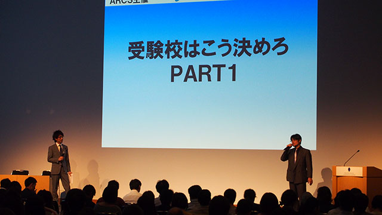

へヴィーな会にあえて参加して下さることが意味するもの
ARCS最大級（今のところですが）のイベント「私立高校説明会」が終わりました。
例によって本音炸裂の詳細については、近日アップ予定の‘対談’にて語らせてもらう予定ですが、ひとまず個人的な苦労話を先にツイートしておきます。
もともとこのイベントは、ウチの所長である管野が塾経営者時代に長年やってきたもので、今年からARCSが主催を引き継いだんです。
ただし、よくありがちなナントカ連盟とかが場を提供して実施する各校ブースに分かれての進学相談会とか私学フェアみたいなものとは一線を画すレベルだと前置きしておきます。
ざっくり言うと、「学校の良いところばかりでなく、問題点や先生の本音を引き出していく」ということに力を注ぎ、出来るだけ学校の真の姿を浮き彫りにしていくわけです。
しかし単にアラ探しをするのでなく、それに対する学校側の努力など姿勢も伝えていくことで、地域全体の教育力向上を図っていくわけですね。
そんなわけで、先述したありがちな説明会や学校主催の説明会などでは決して得られない情報を得られるので、参加した保護者の満足度は段違いなわけです。
まぁこんなへヴィーな会ですから、高校の先生もちょっと不安になりながら参加されたりするわけですが、そうであっても（時に痛いところを突かれる場面があったとしても）わざわざ参加して下さるということは、地域の教育力向上に貢献するという私たちの理念に共感して下さっているということでもあるのです。
私個人の苦労話
私は昨年・今年と、このイベントの総合プロデューサー的な立場だったので、そもそも今年もまた実施するべきなのか、という根本のところから考えました。
まぁ結論としては、地域の教育力向上に貢献するという研究所の存在意義に立ち返ってみても、例年の参加保護者の満足度を顧みても、‘やる’という選択肢以外にはありませんでしたが（笑）。
そこから、昨年より良いものにするにはどうすべきか、というところに思考をめぐらせます。
今年は近隣の高校だけでなく、遠いようで意外に通いやすい都内の高校にも目を向けていきました。
受験校というものは何だかんだと言っても近くの学校だけを見て考えてしまいがちなのですが、もっと視野を広げて考えてみましょう、ということを一つのコンセプトにしたかったのです。
そういったわけで、都内で気になった高校へ足を運び、このイベントのプレゼンしにするわけですが、ここが一つの苦労点でしたね。
高校側としては、「教育研究所アークス？ 知らないなぁ…」というファーストコンタクトになるということは容易に想像がつくわけで…。
しかしもちろんそこは、今まで塾クセジュでやってきた実績をアピールしない手はない。
そのように考えて、会の意義や効果といったものを盛り込んだゴッツいプレゼン資料を作成し、意気込んで説得しに行ったわけです。
その資料作成に苦労というかエネルギーを費やしたことが功を奏したのか、今回伺った高校さんは快く参加を表明してくれました。
さて、例年好評とはいえ、いくらでも内容に改善の余地はあります。
午前中の最初から午後の最後まで参加する場合、約７時間という長丁場になります。
ですから、いかに保護者を飽きさせず楽しんでもらい、かつ「ためになった」と思って帰っていただくかに苦心しました。
ということで、今年は高校の説明そのものも前半後半の二部制にしました。前半は高校の先生からのプレゼン、後半は塾のスタッフからの補足説明や気になる点の質問と研究所ARCSからの深く踏み込んだ質問というメリハリをつけました。
さらに、高校の説明ばかりでは聞いている方の緊張もほぐれないので、昨年好評だった「ＶＳ形式高校紹介」「管野＆庄本のここだけの話」、そして新企画の「受験校はこう決めろ」を随所に盛り込むことで、長時間でも飽きのこない構成にしました。
そうそう、ＶＳ高校紹介ではうちのHP支配人も私の相方としてデビューしたんです。なかなか堂々としていましたよ（笑）。
あと、今年も会終了後の管野の書籍販売とサイン会もありました。
あとは度重なる取材、講師陣のプレゼン内容の打ち合わせ、受付システムのすり合わせ等々、非常にエネルギーをつぎ込みましたが、それだけの成果はあったと思います。
詳しいまとめは対談としても載せますので、ぜひそちらもご一読下さい！